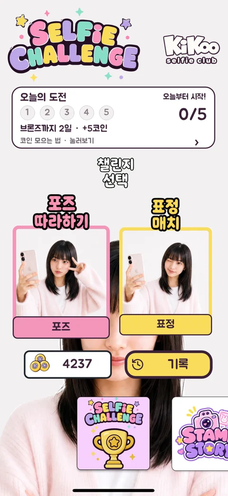
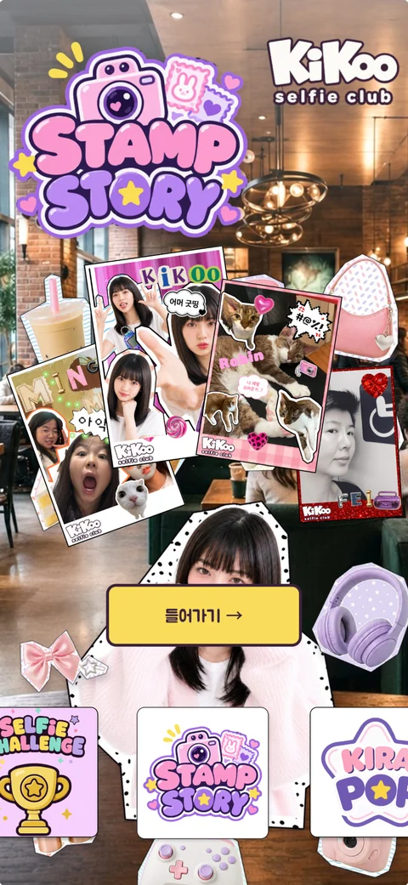
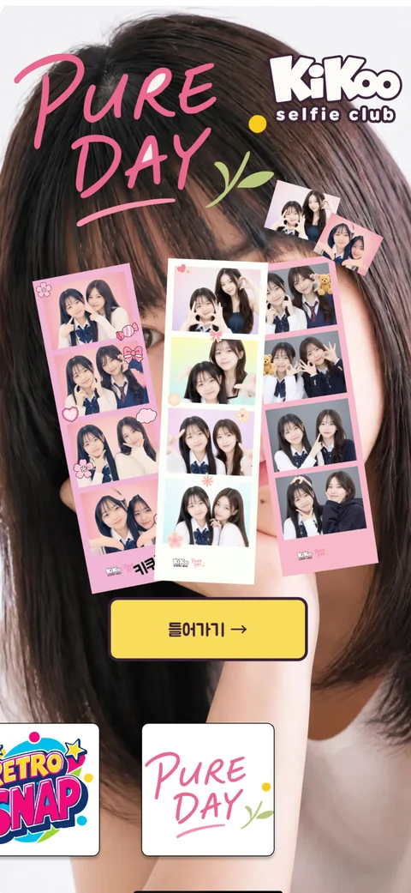
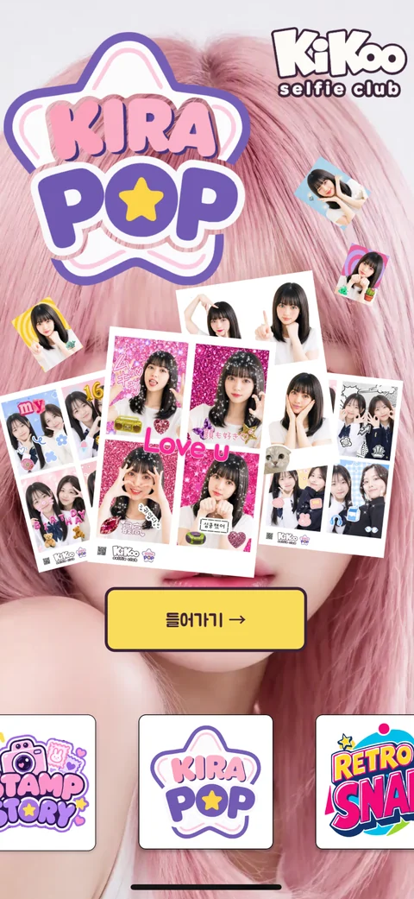
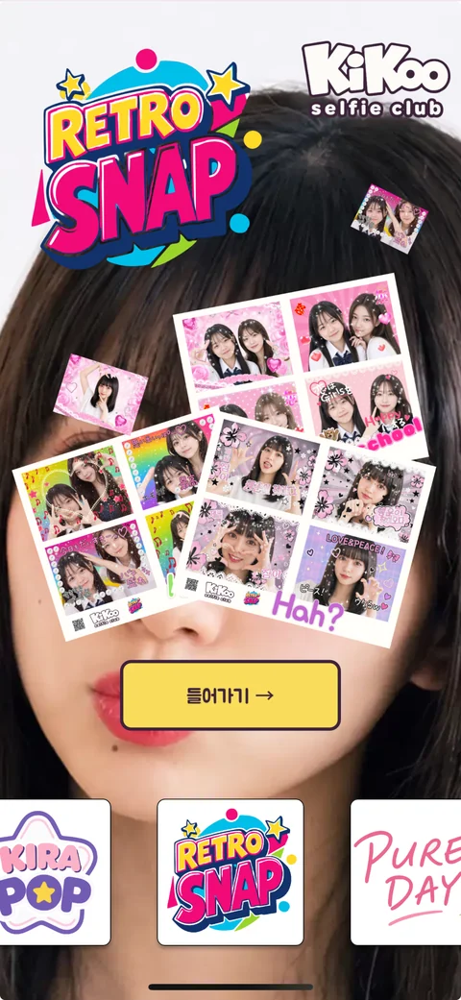
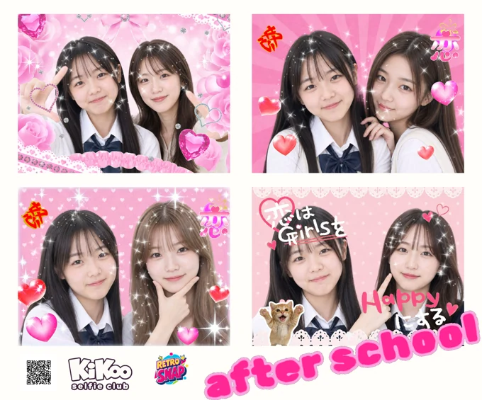
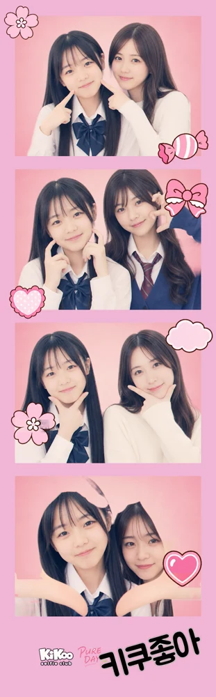
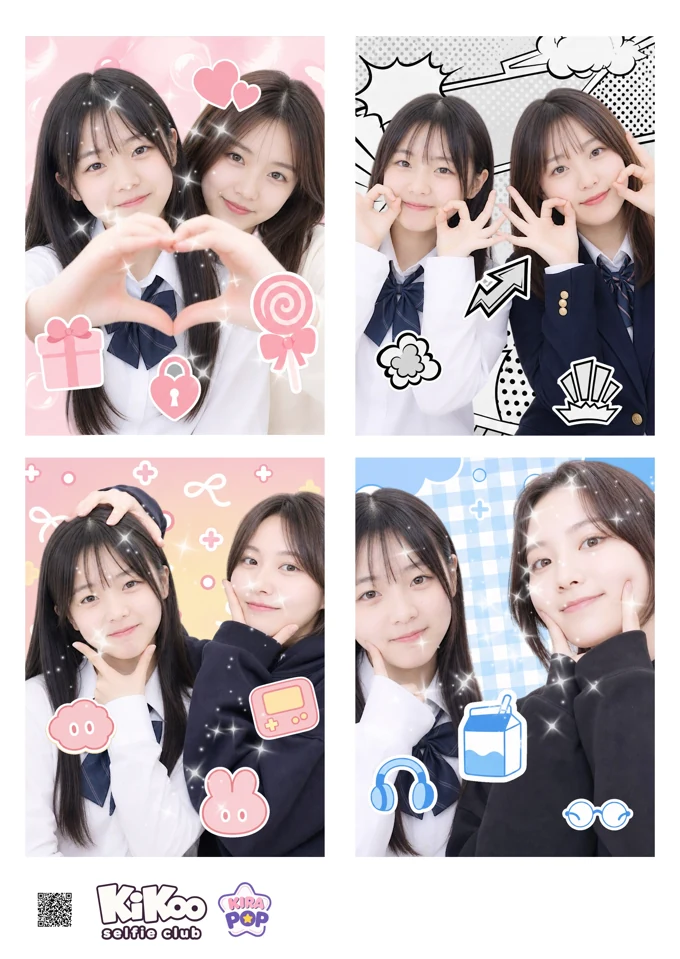

01 ♡
셀카 챌린지
포즈 고민은 이제 그만
500개 넘는 포즈와 60가지 표정. 따라 하고, 도전하고, 메달도 모아요.
내 손안의 작은 포토부스
별일 없는 날도, 같이 웃는 날도.
찰칵 찍고 마음껏 꾸미면, 우리만의 소중한 한 컷!
셀카 챌린지 + 4가지 포토 머신



PICK YOUR KIKOO
하나의 앱, 다섯 가지 즐거움. 오늘 기분에 맞춰 골라요.

01 ♡
포즈 고민은 이제 그만
500개 넘는 포즈와 60가지 표정. 따라 하고, 도전하고, 메달도 모아요.
02 ♡
좋아하는 걸 한 장에 쏙
나도, 친구도, 고양이도 스티커로! 좋아하는 순간을 모아 나만의 이야기를 꾸며요.
03 ♡
반짝반짝, 프리쿠라 타임
음악에 맞춰 찰칵! 메이크업, 배경, 스티커로 내 폰 속 프리쿠라를 즐겨요.

04 ♡
그 시절 감성을 꾹꾹
Y2K 가로 프레임에 스티커와 낙서. 빈티지한 색감으로 추억 한 장을 완성해요.
05 ♡
담백해서 더 소중한 네컷
차분한 음악, 은은한 필터, 오늘을 기억할 한 줄. 우리의 하루를 네컷에 담아요.
키쿠의 실제 앱 화면이에요. 이미지를 누르면 크게 볼 수 있어요.



키쿠로 남긴, 우리의 작은 순간들
LITTLE MOMENTS, BIG LOVE
잘 나온 사진 한 장도 좋지만, 같이 웃던 그 순간까지 오래 간직하고 싶으니까.
스티커를 콕, 낙서를 슥. 마음에 드는 프레임과 조명을 골라 나만의 분위기를 만들어요.
친구와 찍은 사진도 각자 취향대로. 완성한 사진은 내 폰에 저장하거나 원하는 앱으로 직접 공유해요.
사진만으로 아쉬운 날에는 영상으로 남겨요. 촬영의 즐거움과 꾸민 결과물까지 다시 꺼내 볼 수 있어요.
A PROMISE TO YOU
찍은 사진도, 불러온 이미지도, 꾸민 영상도. 키쿠는 사용자의 이미지나 사진·영상을 회사 또는 처리업체의 클라우드로 전송하거나 저장하지 않아요. 촬영과 편집은 내 기기 안에서 이루어져요.
서비스 운영에는 계정 식별정보, 결제 확인, 코인 잔액·사용 내역, 기본 이용 통계와 오류 정보 등 필요한 기초 정보만 사용해요. 직접 선택한 외부 공유나 iCloud 사진 동기화에는 해당 서비스의 정책이 적용돼요.
어떤 정보를 사용하는지 자세히 보기A LITTLE HELP
아니요. 키쿠는 사용자 사진과 영상을 서버나 클라우드로 전송·저장하지 않아요. 계정 동기화에도 사진은 포함되지 않으므로, 간직하고 싶은 결과물은 사진 보관함에 직접 저장해 주세요.
앱에 표시된 코인 패키지와 유료 콘텐츠는 Apple의 앱 내 구입으로 구매해요. 가격과 구성은 결제 전에 확인할 수 있고, 키쿠는 카드번호나 Apple 계정 비밀번호를 받지 않아요.
구매에 연결한 키쿠 계정을 확인하고, 앱의 구매 다시 확인 기능으로 거래 상태를 확인해 주세요. 계속 문제가 있다면 같은 상품을 반복 결제하기 전에 고객지원으로 문의해 주세요.
HELLO, SELFIE CLUB!
키쿠가 궁금하거나 도움이 필요하다면, 인스타그램 DM으로 편하게 이야기해 주세요.
인스타그램으로 문의하기